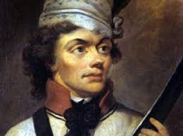

Urodził się 4 lutego 1746 r. w Mereszowszczyźnie na Polesiu jako czwarte dziecko Ludwika Tadeusza i Tekli z Ratomskich.
Ród Kościuszków wywodził się od dworzanina króla Zygmunta I, Konstantego, zwanego zdrobniale Kostiuszko. Tenże za nieznane bliżej zasługi otrzymał w 1509 r. na własność majątek.
W 1765 r. z inicjatywy Stanisława Augusta Poniatowskiego powstała Szkoła Rycerska. Miała ona przygotować kadrę oficerów, ludzi światłych, postępowych i dobrych obywateli.

18 grudnia 1765 r. Kościuszko wstąpił do Korpusu Kadetów Szkoły Rycerskiej, gdzie wyróżniał się.
Studiował tam historię Polski i historię powszechną, filozofię, łacinę, język polski, francuski i niemiecki. 6 października 1769 r. Kościuszko razem z Orłowskim, kolegą ze szkoły rycerskiej, wyjechał jako królewski stypendysta do Francji (Paryż). W Paryżu studiowali w Akademii Malarstwa i Rzeźby. Po jakimś czasie Kościuszko zdał sobie sprawę z tego, że kariera malarza niezupełnie mu odpowiada.
Latem 1774 (dwa lata po I rozbiorze Polski dokonanym przez Rosję, Austrię i Prusy) wrócił do kraju. Nie znalazł zatrudnienia w Wojsku Polskim ówcześnie zredukowanym do 10 000 żołnierzy.
W 1775 roku Kościuszko wyjeżdża do Drezna a potem w 1776 do Ameryk i gdzie prowadzi wojny o wolność. Za zasługi zostaje odznaczony przez kongres i zostaje podniesiony do rangi „generała brygady”.
Jesienią 1775 r. wyjechał do Drezna Nosił się z zamiarem wstąpienia do służby na dworze saskim. Ubieganie się o wstąpienie do służby w Dreźnie nie przyniosły powodzenia, dlatego podjął dalszą podróż do Paryża. Tam dowiedział się o wojnie w Ameryce, gdzie kolonie podjęły walkę z Anglią o swoją odrębność.
Przybył do Ameryki sierpniu 1776 r., niecały miesiąc po ogłoszeniu Deklaracji Niepodległości. Kościuszko został nominowany na inżyniera armii amerykańskiej. Wkrótce po przybyciu do Filadelfii, 24 września 1776 otrzymał zadanie opracowania fragmentu ufortyfikowania miasta (rejon rzeki Delaware). Na wiosnę 1777 roku Kościuszko został wysłany na północ nad granicę kanadyjską pod wodzą generała Horatio Gatesa. Wyrazem uznania dla jego inżynierskich umiejętności było powierzenie mu budowy silnej twierdzy West Point nad rzeką Hudson. Decyzję taką poparł naczelny wódz armii amerykańskiej Jerzy Waszyngton. W uznaniu zasług, uchwałą Kongresu Tadeusz Kościuszko awansowany został 13 października 1783 r. na generała brygady armii amerykańskiej. Otrzymał też specjalne podziękowanie, nadanie gruntu (około 250 ha) oraz znaczną sumę pieniędzy.
W roku 1784 Kościuszko wraca do Polski, chcąc wykorzystania w służbie dla ojczyzny zdobyte doświadczenia. Dopiero po pięciu latach – w 1789 r. już w dobie Sejmu Czteroletniego, Kościuszko powołany zostaje do rozbudowującego się wojska, otrzymując nominację na generała majora Podczas wojny 1792 r. czynny był w polu od pierwszych dni walk jako dowódca dywizji. Nieraz osłaniał odwrót głównych sił ratując sytuację. Największą bitwę wypadło mu stoczyć pod Dubienką 18 lipca 1792 roku, gdy zagrodził drogę na zachód przeważającym siłom nieprzyjaciela. W początkach maja 1794 roku Kościuszko stanął obozem pod Połańcem, ogłaszając tam swój słynny Uniwersał, mocą którego chłopi otrzymywali wolność osobistą, opiekę rządu oraz ulgi w robociznach.
POWSTANIE KOŚCIUSZKOWSKIE 1794, insurekcja kościuszkowska, powstanie narodowe przeciw Rosji, a następnie przeciw Prusom, rozpoczęte 24 III 1794, zakończone 16 XI 1794; spowodowane zostało II rozbiorem Polski i rządami Targowicy, przygotowane przez koła patriotyczne w kraju i na emigracji (m.in. H. Kołłątaj, I. Potocki), 6 VI Kościuszko poniósł klęskę pod Szczekocinami, a 8 VI generał Józef Zajączek został pobity pod Chełmem; wojska powstańcze cofnęły się ku Warszawie; 15 VI Prusacy bez walki zajęli Kraków; bitwa stoczona w pocz. lipca pod Warszawą powstrzymała nieprzyjaciela i pozwoliła zakończyć przygotowania do obrony miasta; od 22 VII do 5 IX Warszawa (ufortyfikowana pod kierunkiem Kościuszki) była oblężona. 20–23 VIII wybuchło powstanie w Wielkopolsce; wiadomości o jego sukcesach skłoniły wojska pruskie do wycofania się spod Warszawy; równocześnie korpus rosyjski gen. I. I. Fersena cofnął się nad dolną Pilicę; na pomoc powstańcom wielkopolskim Kościuszko wysłał korpus pod dowództwem J.H. Dąbrowskiego; 2 X zdobył on Bydgoszcz i wkroczył na Pomorze. Powstanie na Litwie zostało stłumione w okresie sierpnia i września (12 VIII padło Wilno). Nowa armia ros. (m.in. pod dowództwem A.W. Suworowa) odniosła zwycięstwo pod Krupczycami i Terespolem (17 i 19 IX); aby nie dopuścić do połączenia się wszystkich wojsk ros., Kościuszko wydał Fersenowi bitwę pod Maciejowicami (10 X), która zakończyła się klęską Polaków; ranny Kościuszko dostał się do niewoli. Nowym naczelnikiem powstania został T. Wawrzecki, a faktyczne dowództwo wojska objął gen. J. Zajączek; w kierownictwie ruchu powstały spory między przedstawicielami różnych kierunków politycznych; Suworow, połączywszy się z wojskiem Fersena, ruszył na Warszawę; 4 IX zdobył szturmem Pragę (m.in. zginął J. Jasiński), dokonując rzezi ludności; Warszawa kapitulowała 5 XI; Wawrzecki z częścią wojska wycofał się na pd.; 16 XI pod Radoszycami nastąpiło ostateczne rozwiązanie oddziałów. Po upadku powstania Austria, Prusy i Rosja dokonały 1795 III rozbioru Polski. Powstanie kościuszkowskie miało ogromny wpływ na rozwój polskiej myśli politycznej; próby Kościuszki wciągnięcia do walki mas ludowych i radykalizm społeczny jakobinów tworzyły tradycję nurtu lewicowego polskich ruchów wolnościowych, łączących walkę o niepodległość z programem reform społecznych. Na arenie międzynarodowej kierownictwo powstania bezskutecznie starało się uzyskać pomoc rewolucyjnej Francji; powstanie, wiążąc siły pruskie, uniemożliwiło Prusom działanie przeciw Francji.
1796 r. car Paweł I wypuścił Kościuszkę, który zgodził się złożyć przysięgę wiernopoddańczą, w zamian za co car wypuścił 20 000 Polaków. Wyjechał do Stanów Zjednoczonych, a od połowy 1798 przebywał we Francji, wspierał tworzenie Legionów Polskich, przystąpił do Tow. Republikanów Pol.; nie ufając Napoleonowi I, odmówił współpracy; podobnie nie chciał współpracować z Aleksandrem I, gdy ten nie przyjął warunków odbudowania Polski na zasadach republikańskich (1815); zmarł w Solurze (Szwajcaria); 1819 jego zwłoki złożono na Wawelu; 1820–23 usypano kopiec jego imienia pod Krakowem. Postać Kościuszki obrosła legendą i stała się przedmiotem kultu w Polsce i w Stanach Zjednoczonych. (Fundacja Kościuszkowska); także w innych krajach tworzono jego pomniki, portrety; jest bohaterem narodu polskiego i amerykańskiego.
Ja, Tadeusz Kościuszko, przysięgam w obliczu Boga całemu Narodowi Polskiemu, iż powierzonej mi władzy na niczyj prywatny ucisk nie użyję, lecz jedynie dla obrony całości granic, odzyskania samowładności Narodu i ugruntowania powszechnej wolności używać będę.
Największym zwycięstwem jest to, które odnosimy nad nami samymi.
Pierwszy krok do zrzucenia niewoli jest odważyć się być wolnym, pierwszy krok do zwycięstwa – poznać się na własnej sile.
To jest czas, w którym trzeba poświęcić wiele, żeby wszystko ocalić.
Tylko wierność ludziom, czyni z nas człowieka”